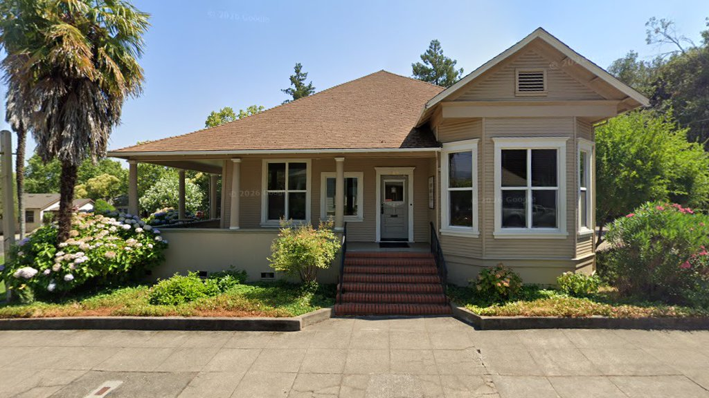
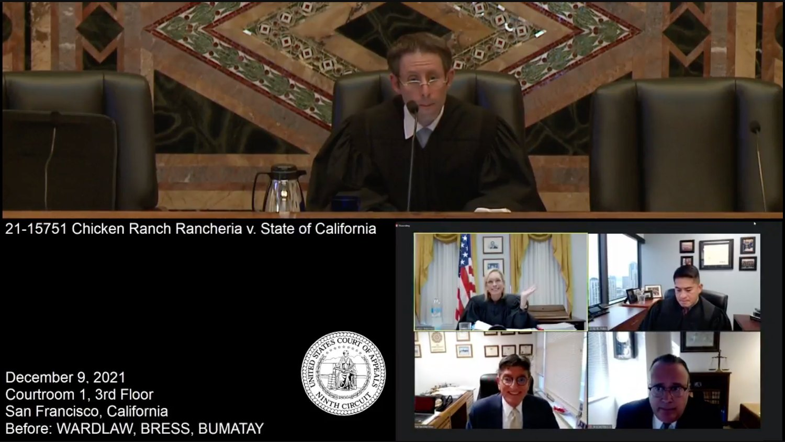
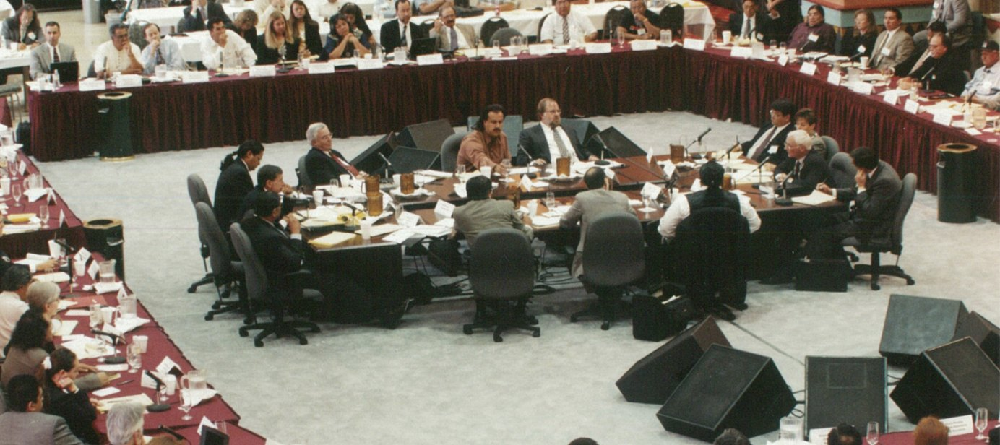
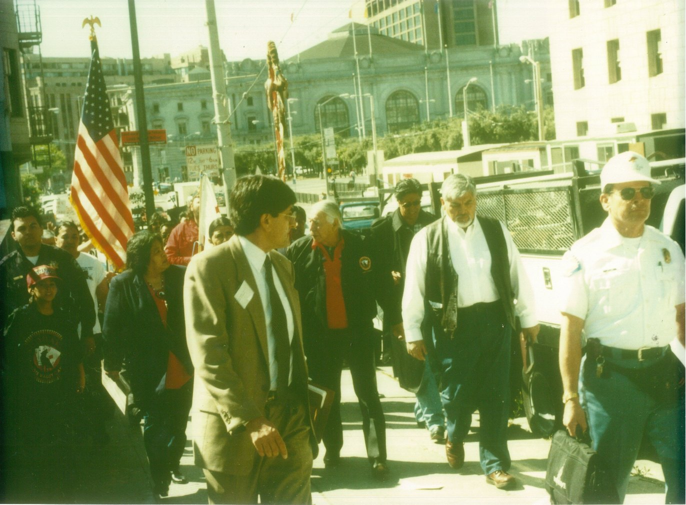

Education
University of California, Hastings College of the Law
Mr. Marston began his legal career in the 1970s following his graduation from UC Hastings College of Law.
Federal Indian Law and Tribal Representation
Lester J. Marston is a Cahuilla attorney who represents Tribal Nations, tribal entities, and Native individuals throughout the United States.
Contact Us
Lester J. Marston, Cahuilla
Following his graduation from UC Hastings College of Law, Mr. Marston began his law career in the 1970s as a staff and directing attorney at California Indian Legal Services. He entered private practice in 1982.
Mr. Marston has served as in-house counsel to sixteen federally recognized Tribal Nations in California, Arizona, Oregon, and Wisconsin. He has also worked with Tribal Nations, Native organizations, and community groups in Kansas, Michigan, New York, Minnesota, and Washington.
For five years, he served as Chief Judge for the Confederated Tribes of the Grand Ronde Indian Community of Oregon. He also served for more than ten years as Chief Judge of the Blue Lake Rancheria Tribal Court.
Education, admissions and publications
Mr. Marston's education, court admissions and published work reflect decades of practice in federal, state and tribal law.
University of California, Hastings College of the Law
Mr. Marston began his legal career in the 1970s following his graduation from UC Hastings College of Law.
Selected case history
Federal recognition
While serving as a staff and directing attorney at California Indian Legal Services, Mr. Marston worked on this landmark case. Its settlement restored federal recognition to 17 California Tribal Nations and restored their tribal land bases.

Ninth Circuit victory
Mr. Marston and his legal team prevailed against the State of California and Governor Gavin Newsom in Chicken Ranch Rancheria, Blue Lake Rancheria, Chemehuevi Indian Tribe, Robinson Rancheria, and Hopland Band of Pomo Indians v. Newsom, 42 F.4th 1024 (9th Cir. 2022).
The Ninth Circuit held that California and its governor failed to negotiate tribal-state gaming compacts in good faith by demanding provisions unrelated to gaming operations and outside the permissible scope of negotiation under the Indian Gaming Regulatory Act.


Mr. Marston marched alongside tribal leaders to the federal courthouse in San Francisco in support of the motion for summary judgment he filed in Chemehuevi Indian Tribe, et al. v. Wilson, et al.
Legal services
Mr. Marston and his team advise tribal clients on major impact litigation, government operations, transactions, negotiations, and legislation that affect Tribal Nations and Native people.
Mr. Marston and his legal team serve tribal governments and tribal entities as in-house counsel. They have helped establish and advise tribal court systems, tax commissions, police departments, housing authorities, fish and game departments, economic development corporations, gaming commissions, and tribal joint powers agencies.
The team regularly advises tribal councils and governmental arms, prepares intergovernmental agreements and commercial contracts, and has participated in hundreds of fee-to-trust land acquisitions.
The firm serves as special counsel to Tribal Nations and tribal entities on individual matters, including tribal water rights negotiations and litigation. Mr. Marston was one of four attorneys selected to represent 64 California Tribal Nations in the negotiations that produced the 1999 tribal-state gaming compacts.
His work includes drafting tribal-state gaming compacts and amendments, management agreements, gaming equipment leases, consulting agreements, and the legal documents used to finance, design, develop, construct, and operate gaming facilities, hotels, and related facilities.
Mr. Marston and his legal team have worked on significant federal and state legislation, including drafting the 1988 amendments to the Indian Reorganization Act, 25 U.S.C. § 476, and California Fish and Game Code sections 16000 through 16011, which authorize state fishing agreements with Tribal Nations.
Their work also includes California Code of Civil Procedure sections 1730 through 1742, the Tribal Court Civil Money Judgment Act, which requires California state courts to recognize and enforce tribal court civil money judgments.
Native American Law, Federal Indian Law, Tribal Law, Civil Law, Civil Litigation, Municipal Law, Indian Gaming, Business Law, Commercial Litigation, Real Estate Law, Land Use Law, Environmental Law, Water Law, Employment Law, Contracts, Indian Child Welfare Act, Construction Defects, Zoning, Civil Rights, Indian Taxation, Tribal Economic Development, and Indian Hunting and Fishing Rights.
Mr. Marston builds long-lasting relationships with his tribal clients. He is a trusted and reliable resource for Tribal Nations and Native individuals seeking representation in matters involving tribal governments, lands, and communities.
References and curriculum vitae are available upon request.
Contact the firm
405 West Perkins Street
Ukiah, California 95482
(707) 462-4235
Please contact Ericka Duncan at (707) 462-6846.